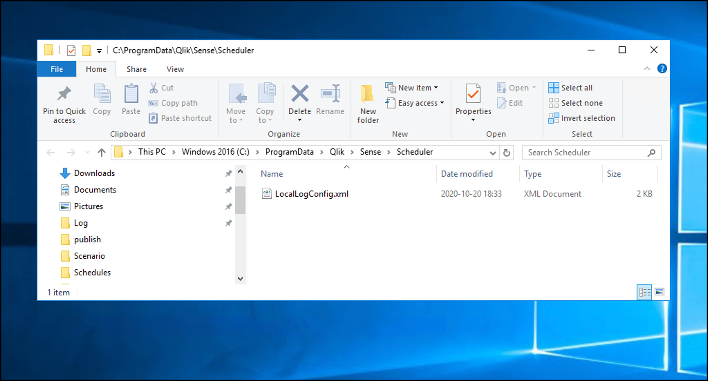

Butler offers a lot of flexibility when it comes to alerts when reloads fail or are aborted in Qlik Sense Enterprise on Windows (QSEoW).
Learn how to set up the desired features, the alert layout, formatting and more.
Alert types
These alert types are available:
Reload task failure. Send alerts when reload tasks fail, no matter if they were started on schedule or manually from the QMC.
Reload task aborted. Send alerts when reload tasks are manually aborted in the QMC.
Alert destinations and options
Alerts can be sent to these destinations, with different options available for each destination.
Each destination can be individually enabled/disabled in the config file.
The failed reload’s script log is available in InfluxDb.
New Relic
-
-
The failed reload’s script log is available in New Relic.
Signl4
-
-
Alerts are presented in Signl4’s own format in their mobile app.
Slack
MS Teams
Outgoing webhook
-
-
Formatting is not relevant for webhooks
MQTT
-
-
Formatting is not relevant for MQTT messages
How it works
In order for Butler initiated alerts to become a reality, Butler must somehow be notified that the event of interest (for example a failed reload task) has occurred.
This is achieved by adding a log appender to Qlik Sense Enterprise on Windows.
Log appenders offer a way to hook into Qlik Sense’s logging subsystem, which is called log4net.
By adding a carefully crafted .xml file in the right location on the Sense server(s), you can make Sense notify Butler by means of UDP messages when the events of interest occur. Conceptually it looks like this:
So what happens when a scheduled reload task fails?
Let’s look at the steps:
A reload task is started by the Sense scheduler, either on a time schedule, as a result of some other task(s) finishing or manually by a user in the QMC or from the Hub.
When the task’s state changes, entries are written to the Sense scheduler’s log files using log4net (which is built into Qlik Sense). If the filter defined in the log appender (= the .xml file on the Sense server) matches the log entry at hand, the associated action in the log appender will be carried out.
Log appenders can do all kinds of things, everything from writing custom log files, sending basic emails, writing to databases and much more.
Here we’re interested in the log appender sending a UDP message from Qlik Sense to Butler.
The log appender provided as part of Butler will make log4net send a UDP message to Butler, including various info about the reload task that just failed or was stopped/aborted.
Butler will look at the incoming event and determine what it is about.
For example: Is the event about a reload task failure, a reload that has been aborted/stopped, or something else?
Butler thus first works as a dispatcher. In a second step, after the initial dispatch, the event is sent to the relevant handler function within Butler.
Response times are usually very good - Butler will typically get the UDP message within a few seconds after (for example) the reload failing, with alerts going out shortly thereafter.
Warning
The log appenders that catch failed and aborted reloads in the Qlik Sense engine and scheduler must be set up on all Qlik Sense servers where reloads are happening for this feature to work.
Failing to do so will result in Butler not being notified about some reload failures/aborted reloads.
Adding a log appender
This is possibly the trickiest part to get right when it comes to setting up log4net based alerts.
Still, if you start from the sample .xml file provided in the Butler repository on GitHub it’s not too hard.
Those sample .xml files are also included in the release Zip files available on the Butler releases page.
The steps are:
In this case you want to be notified when certain events occur in the scheduler log files.
This is important: Qlik Sense Enterprise on Windows consists of many different subsystems (engine, proxy, scheduler, printing etc) - here we’re interested in log events from the scheduler subsystem.
Add a file LocalLogConfig.xml in the C:\ProgramData\Qlik\Sense\Scheduler folder on the Sense server whose scheduler you want to get events from. If you have multiple Sense servers with schedulers running on them, the .xml file should be deployed on each server (assuming you want events from all the servers).
The contents of LocalLogConfig.xml will determine what events are forwarded to Butler, or what other actions will be taken by log4net. See below for examples.
Sense will eventually detect and load the new xml file, but it might take a while (minutes). Restarting the Qlik Sense Scheduler Windows service will make the changes take effect immediately.

Forwarding task reload events to Butler
Here’s the XML that should go into C:\ProgramData\Qlik\Sense\Scheduler\LocalLogConfig.xml to enable the various kinds of Butler task reload alerts.
The remoteAddress property should be set to the host name or IP where Butler is running.
The remotePort property should match the port number specified in Butler’s config file. Note that Butler uses different ports for task related and user activity related events.
The first appender looks for the text “Max retries reached” in the System.Scheduler.Scheduler.Master.Task.TaskSession log stream. That log entry will be created when a reload task has failed and also carried out all its retries. Once the search string is found a UDP message will be sent to port 9998 on IP 10.11.12.13.
The second appender looks for “Execution State Change to Aborting” in the System.Scheduler.Scheduler.Master.Task.TaskSession log stream. That log entry occurs when a user stops a running reload from the QMC’s task view, or using the Sense APIs. When the search string is found a UDP message is once again sent to 10.11.12.13:9998, but with a different messsage (as specified in the conversionpattern property of the appender).
The third appender looks for “Reload complete” in the System.Scheduler.Scheduler.Slave.Tasks.ReloadTask log stream.
That log entry occurs when a reload task has completed successfully.
Here is an XML file that would forward log events as UDP messages to Butler:
<?xml version="1.0" encoding="UTF-8"?><configuration><!-- Appender for detecting reload task failures. Only the last of potentially several retries is reported --><appendername="TaskFailureLogger"type="log4net.Appender.UdpAppender"><filtertype="log4net.Filter.StringMatchFilter"><paramname="stringToMatch"value="Max retries reached"/></filter><filtertype="log4net.Filter.DenyAllFilter"/><paramname="remoteAddress"value="<IP of server where Butler is running>"/><paramname="remotePort"value="9998"/><paramname="encoding"value="utf-8"/><layouttype="log4net.Layout.PatternLayout"><converter><paramname="name"value="hostname"/><paramname="type"value="Qlik.Sense.Logging.log4net.Layout.Pattern.HostNamePatternConverter"/></converter><paramname="conversionpattern"value="/scheduler-reload-failed/;%hostname;%property{TaskName};%property{AppName};%property{User};%property{TaskId};%property{AppId};%date;%level;%property{ExecutionId};%message"/></layout></appender><!-- Appender for detecting aborted reloads --><appendername="AbortedReloadTaskLogger"type="log4net.Appender.UdpAppender"><filtertype="log4net.Filter.StringMatchFilter"><paramname="stringToMatch"value="Execution State Change to Aborting"/></filter><filtertype="log4net.Filter.DenyAllFilter"/><paramname="remoteAddress"value="<IP of server where Butler is running>"/><paramname="remotePort"value="9998"/><paramname="encoding"value="utf-8"/><layouttype="log4net.Layout.PatternLayout"><converter><paramname="name"value="hostname"/><paramname="type"value="Qlik.Sense.Logging.log4net.Layout.Pattern.HostNamePatternConverter"/></converter><paramname="conversionpattern"value="/scheduler-reload-aborted/;%hostname;%property{TaskName};%property{AppName};%property{User};%property{TaskId};%property{AppId};%date;%level;%property{ExecutionId};%message"/></layout></appender><!-- Appender for detecting successful reload tasks --><appendername="ReloadTaskSuccessLogger"type="log4net.Appender.UdpAppender"><filtertype="log4net.Filter.StringMatchFilter"><paramname="stringToMatch"value="Reload complete"/></filter><filtertype="log4net.Filter.DenyAllFilter"/><paramname="remoteAddress"value="<IP of server where Butler is running>"/><paramname="remotePort"value="9998"/><paramname="encoding"value="utf-8"/><layouttype="log4net.Layout.PatternLayout"><converter><paramname="name"value="hostname"/><paramname="type"value="Qlik.Sense.Logging.log4net.Layout.Pattern.HostNamePatternConverter"/></converter><paramname="conversionpattern"value="/scheduler-reloadtask-success/;%hostname;%property{TaskName};%property{AppName};%property{User};%property{TaskId};%property{AppId};%date;%level;%property{ExecutionId};%message"/></layout></appender><!-- Send message to Butler on task failure --><!-- Send message to Butler on task abort --><loggername="System.Scheduler.Scheduler.Master.Task.TaskSession"><appender-refref="TaskFailureLogger"/><appender-refref="AbortedReloadTaskLogger"/></logger><!-- Send message to Butler on reload task success --><loggername="System.Scheduler.Scheduler.Slave.Tasks.ReloadTask"><appender-refref="ReloadTaskSuccessLogger"/></logger></configuration>
The above configuration is enough to support all task reload alerts currently supported by Butler.
Sending basic alert emails from log4net
If you are happy with the more basic/limited reload-failed alert emails provided by log4net, you can add a SMTP appender like this (the example below is for sending emails using Google GMail, customise as needed):
<?xml version="1.0"?><configuration><!-- Mail appender--><appendername="MailAppender"type="log4net.Appender.SmtpAppender"><filtertype="log4net.Filter.StringMatchFilter"><paramname="stringToMatch"value="Message from ReloadProvider"/></filter><filtertype="log4net.Filter.DenyAllFilter"/><evaluatortype="log4net.Core.LevelEvaluator"><paramname="threshold"value="ERROR"/></evaluator><paramname="to"value="<email address to send failed task notification emails to>"/><paramname="from"value="<sender email address used in notification emails>"/><paramname="subject"value="Qlik Sense failed task (server <servername>)"/><paramname="smtpHost"value="smtp.gmail.com"/><paramname="port"value="587"/><paramname="EnableSsl"value="true"/><paramname="Authentication"value="Basic"/><paramname="username"value="<Gmail username>"/><paramname="password"value="<Gmail password>"/><paramname="bufferSize"value="0"/><!-- Set this to 0 to make sure an email is sent on every error --><paramname="lossy"value="true"/><layouttype="log4net.Layout.PatternLayout"><paramname="conversionPattern"value="%newline%date %-5level %newline%property{TaskName}%newline%property{AppName}%newline%message%newline%newline%newline"/></layout></appender><!--Send mail on task failure--><loggername="System.Scheduler.Scheduler.Slave.Tasks.ReloadTask"><appender-refref="MailAppender"/></logger></configuration>
References
Qlik’s documenation around log appenders and how to hook into the Sense logs is somewhat brief, but does provide a starting point if you want to dive deeper into this topic.
The main log4net documentation (log4net is the logging framework used by Qlik Sense Enterprise) can also be useful.
These links describe how emails can be sent from the log4net logging framework itself, directly to the recipient. Butler includes sameple XML files for this use case too, but Butler takes things further by using the data in the Sense logs to pull in more data around the failed or stopped reload.
In other words - Butler’s alert emails are significantly more flexible and contain information (such as script logs) that are not availble using purely log4net.